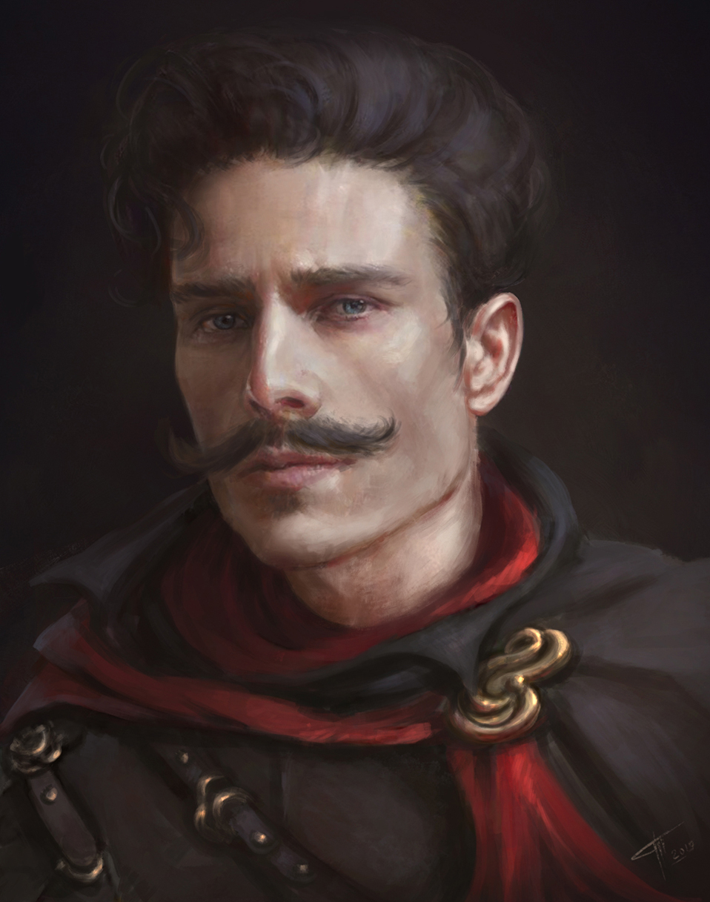

John the Revelator
Arda Gökay MISIROGLU tarafından canlandırılmış ve oynanmıştır. Arda'nın ilk karakteridir. John the Revelator, Ak Çağlayan'ın altındaki köyde doğan ve büyüyen, köylü bir ailenin çocuğudur. Babası Elton, belli vakite kadar John'un bildiği kadarıyla ortalama bir avcı ve John'a avcılığı öğreten kişidir, annesi Maria ise sıradanın üstüne çıkamayacak bir ev hanımıdır. Babasının ondaki nişan alma ve bıçak kullanma yeteneğini fark etmesi ve bu köyün ona küçük geleceğini anlaması üzerine John, babasının isteği ve yardımı sayesinde Beyaz Şehir'e gitmiş ve orada yıllarını geçirmiştir. Fakat Beyaz Şehir'e gitme macerasında durduğu ve yıllarını geçirdiği ilk nokta Demirkoru olmuştur.
Demirkoru lokasyonunda dinleneceği süreyi geçirdikten sonra yola koyulan John yolda bir pusuya düşmüştür ve bu pusuyu bertaraf ederek kendini kanıtlamıştır. John'un bu yiğitliğini, Demirkoru'dan bir oduncunun görmesi üzerine John, Demirağıt köşküne davet edilmiştir. Edepsizliği ile öne çıksa da John, Malikanenin ve Demirkoru tebaasının o zamanli lordu olan Lord Edmund Demirağıt'ın gözüne bir şekilde girmiştir ve lorda kendini kanıtladıktan sonra, 20 yaşından 27 yaşına kadar Demirkoru'ya ve Demirağıt ailesine hizmet etmiştir. Bu hizmetleri sonucunda; odunculuk, dövüş sanatları, kahyalık, suikastçilik ve elçilik yeteneklerini öğrenmiş ve geliştirmiştir. Hizmetleri doğrultusunda ömrü boyunca Demirkoru'nun bir ferdi olarak kabul edilmiştir. Demirkoru'dan ayrılırken bile, hala Demirağıt ailesinin faydası için çalışmaya özenle devam etmiştir. Daha sonrasında ise Beyaz Şehir'e gelmiş ve 33 yaşına kadar burada bulunmuştur. Çeşitli işler yapmış; turnuvalara katılmış, Kara Karga Loncası'nın belli bir nebzede üyesi olarak maceracılık yapmış, suikast görevleri gerçekleştirmiş ve nice dahasını gerektiği müddetçe uygulamıştır.
Aldığı bir iş sonucu, bir orman elfi olan ve yakın olmasalarda birbirlerini arkadaş olarak gördüğü Daynore Dinenlas ile birlikte Zonthar adındaki yerleşkeye gitmiştirler. Yerleşkeye geldiklerinde yaptıkları ilk iş görev icabı bir Bugbear'ı öldürmek olmuştur. Daha sonrasında ise, Zonthar'ın iç meselelerini çözmek adına, orada tanıştıkları Uther, Damian ve Ruven ile birlikte, daha sonrasında "Carpe Diem" olarak bilinecek maceracı gruplarını oluşturmuşlardır.
Grubun içinde birçok dramaya şahit olmuştur, ama gene de, yaşadıkları sonrasında en iyi arkadaşı konumuna gelmiş Daynore'yi desteklemiş ve onu hep lider olarak görmüştür. Grubun bilmeyeceği şekilde, onların işini kolaylaştırmak adına alttan alta pis işler de yapmıştır. Lakin Büyük Zonthar Muharebesi'nde köye akın eden Goblin Baskını sonucunda hayatını kaybetmiştir. Ymugz adındaki Goblin Lideri bir suikastçi ile çıktığı birebir sonrasında, arkadaşlarının müdahale etmemesi sonucunda hayatını kaybetmiştir. Zonthar'da arkadaşlarının hazırladığı bir cenaze sonrasında, Zonthar mezarlığına defnedilmiştir. Lakin ölümünü duymasının ardından John'un babası olan Elton, eski dostu Hurdun ile birlikte oğlunun cesedini bulmuş ve John'u diriltmiştir.
Gözlerini tekrar dünyaya açtığında John, babasının ve arkadaşının Kal'El adındaki bir tarikatın üyesi olduğunu öğrenmiştir. Tarikatın amacını yani ölü bir Tanrıça olan Lolth'u diriltmek olduğunu öğrendikten sonra John'un yapabileceği iki seçenek vardı; Ya arkadaşlarına geri dönecekti, ya da bu tarikatın bir üyesi olacaktı. Elton bu kararı vermesi için baskı yapmasa da, gelişebilmesi ve güçlenebilmesi adına doğru şeyin bu olduğunu söyledi, fakat gene de seçimi oğluna bıraktı ve ona veya arkadaşlarına zarar vermeyeceğini söyledi seçimi onlara dönmek olursa. Fakat gene de John, burada zaman geçirdikçe ve diğer insanları tanıdıkça, Kal'El'de kalmayı tercih etti. Hayatını bu süreçten itibaren Kal'El'in faydası üzerine çalışmaya adadı ve Lolth'un dirilişi için ve diyardaki diplomasiyi sabote etmek için çeşitli "Espionage" ve "Suikast" görevlerine gönderildi. Bu süreçte ilk başlarda John'a Elton, sonra amcası olarak gördüğü Brullark, daah sonrasında ise kendi üstü olan Zelfaere adındaki kadın eğitim verdi ve daha sonrasında Zelfaere ile görevlere gönderilmeye başlandı. Bu sürecin sonunda ise, eski grup arkadaşı Damian'ın manipüle edilmesi ve Lolth'un dirilişinde inhibitör madde olarak görev yapmayı ve kendini feda etmeyi kabul etmesi neticesinde Ölü Tanrıça Lolth diriltildi.
Hedeflerini başarıyla gerçekleştirmelerine karşın Kal'El'in yapacakları ve misyonları sonlanmamıştı. Dirilmiş Tanrıçaları için Artifact niteliğindeki eşyaları 2 yıllık bir serüven sonrasında ele geçirdiler ve Lolth'un bu eşyalar neticesinde tekrardan güç kazanmasını sağladılar. Bu güç kazanma sürecini güvenceye almak için, Kal'El'in bu misyonunu bilen İmparatorluğa karşı bir komplo kurdular ve Elton, John'un kişiliğini değiştirerek İmparatorluğun içine sızmasını sağladı. Mahlasını değiştirerek ismini Deep yapan John, İmparatorluğun başlattığı Kampanya'yı sabote ederek, sahte kişiliği ile kendini bu kampanyanın içine dahil etmiş, İmparatorluğun Seçilmişleri grubuna dahil olmuş ve onların bu Artifactleri bulma serüveninde onlara çaktırmadan engel olmuştur. Lakin bu grubun Kuzey'deki serüveni esnasında, çok şanssız bir biçimde Yüce bir Ejder olan "Platin Ejderi Dommon" ile karşılaşması sonucunda kimliği ifşalanmıştır. Lakin gene de grubun kanına bir şekilde girerek güven kaybetse de, kendini grubun içinde tutmayı başarmıştır. Lakin Kal'El'in beklemediği bir olay silsilesinin gerçekleşmesi neticesinde Antik Ejderha Valdrunas'ın inine izinsizce girmişlerdir. Bu ini koruyan koruyucu olan Koruyucu Ererion'u öldürmeyi başarsalar dahi, takım arkadaşlarından biri olan Rahibe Matar Areyastin'in distingere olmasıyla grubun çöküşü kaçınılmaz bir noktaya gelmiştir ve en nihayetinde hayatta kalan bütün parti üyeleriyle birlikte Antik Ejderha Valdrunas'ın alevleri arasında can vermiştir.
John olarak, İmparatorluk tarafınca gerçek bir "Carpe Diem" üyesi olarak tanınmamıştır, çünkü grup ile birlikte Zincirdarlar ile tanışmamış ve Underdark'a grup ile birlikte inmemiştir. Gene de bu grubun belli noktada bir parçası olduğu için ismi Tanrı Anıtları'nda kısa da olsa geçiyordur. Deep'in yeri ise, ironik bir biçimde anıt mezarlığının baş tacı niteliğinde, İmparatorluk Şehitleri olarak geçiyordur. John isminin pek bir etkisi olmamıştır ve yalnızca Capre Diem'deki diğer kişi olarak hatırlanmaktadır, ama Deep ismi, kitaplara yazılmış ve tarihe geçmiş, bir trajediye kurban gitmiş şanlı bir kahraman olarak hatırlatılıyor ve hatırlatılmaya devam edecektir.
Ölümünden sonra cesedinin Elton tarafından tekrar ele geçirilmesiyle John yeniden diriltilmiştir. Fakat cesedin durumu belli bir müddeti geçtiğinden ötürü Reenkarne olmak zorunda kalmıştır ve bu Reenkarnasyon sonucunda hayata bir Halfling olarak geri dönmüştür. Fakat Elton, Lolth'u güçlendirme görevini de sonlandırmışlardı neticede. Bundan ötürü yeni bir misyon ile, bazı dünya dışı kahramanlar ile birlikte; kurucu üyeliğini üstlendiği Wings of Vengeance grubunu bilinmeyen bir amaç üzerine kurmuştur. Bu grubun üç kurucu üyesi; Elton fakat diğer bir mahlasıyla Hercules, Shalia Zinfaren ve Vendeep Purewing olmuştur. John, yani hayatının bu aşamasından sonraki yeni kişiliği ile Addams, dirilişinin ardından bu gruba katılmıştır, ve bilinmeyen bir amaç neticesinde, diyarın bütün diplomasisini etkileyecek görevlere çıkıyordur...